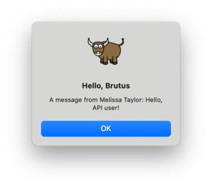
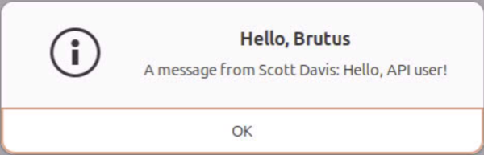
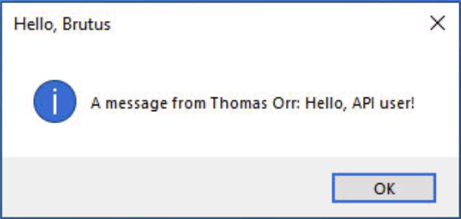

Esercitazione 8 - Renderlo liscio¶
Finora, la nostra applicazione è stata relativamente semplice: visualizzare i widget dell'interfaccia grafica, richiamare una semplice libreria di terze parti e visualizzare l'output in una finestra di dialogo. Tutte queste operazioni avvengono molto rapidamente e l'applicazione rimane reattiva.
Tuttavia, in un'applicazione del mondo reale, avremo bisogno di eseguire compiti complessi o calcoli che potrebbero richiedere un po' di tempo per essere completati e, mentre questi compiti vengono eseguiti, vogliamo che la nostra applicazione rimanga reattiva. Facciamo una modifica alla nostra applicazione che potrebbe richiedere un po' di tempo per essere completata e vediamo le modifiche da apportare per adattarla a questo comportamento.
Accesso a un'API¶
Un'attività comune che richiede molto tempo per un'applicazione è quella di effettuare una richiesta a un'API Web per recuperare dati e visualizzarli all'utente. Le API Web a volte impiegano uno o due secondi per rispondere, quindi se stiamo chiamando un'API di questo tipo, dobbiamo assicurarci che la nostra applicazione non diventi non reattiva mentre aspettiamo che l'API Web restituisca una risposta.
Si tratta di un'app giocattolo, quindi non abbiamo una API reale con cui
lavorare, quindi useremo un endpoint API di esempio come fonte di dati. Se apri
https://tutorial.beeware.org/tutorial/message.json
nel tuo browser, otterrai un payload JSON con un messaggio.
La libreria standard di Python contiene tutti gli strumenti necessari per accedere a un'API. Tuttavia, le API integrate sono di livello molto basso. Sono buone implementazioni del protocollo HTTP, ma richiedono all'utente di gestire molti dettagli di basso livello, come il reindirizzamento degli URL, le sessioni, l'autenticazione e la codifica del payload. Come "normale utente di browser", probabilmente siete abituati a dare per scontati questi dettagli, poiché il browser li gestisce per voi.
Di conseguenza, sono state sviluppate librerie di terze parti che avvolgono le
API integrate e forniscono un'API più semplice e più vicina all'esperienza
quotidiana del browser. Utilizzeremo una di queste librerie per accedere all'API
dei segnaposto {JSON}. API dei segnaposto - una libreria chiamata
httpx. Briefcase usa internamente httpx,
quindi è già presente nell'ambiente locale; non è necessario installarla
separatamente per usarla qui.
Aggiungiamo una chiamata API httpx alla nostra applicazione. Modificare
l'impostazione requires nel nostro pyproject.toml per includere il nuovo
requisito:
requires = [
"faker",
"httpx",
]
Aggiungere un'importazione all'inizio di app.py per importare httpx:
import httpx
Per rendere il nostro tutorial asincrono, modificare il gestore dell'evento
say_hello() in modo che assomigli a questo:
async def say_hello(self, widget):
fake = faker.Faker()
with httpx.Client() as client:
response = client.get("https://tutorial.beeware.org/tutorial/message.json")
payload = response.json()
await self.main_window.dialog(
toga.InfoDialog(
greeting(self.name_input.value),
f"A message from {fake.name()}: {payload['body']}",
)
)
Questo modificherà il callback say_hello() in modo che, quando viene invocato,
lo faccia:
- effettuare una richiesta GET all'API JSON dei segnaposto per ottenere il post 42;
- decodificare la risposta come JSON;
- estrarre il corpo del messaggio; e
- includere il corpo di quel messaggio come testo della finestra di dialogo "messaggio", al posto del testo generato da Faker.
Eseguiamo la nostra applicazione aggiornata in modalità sviluppatore di
Briefcase per verificare che la nostra modifica abbia funzionato. Poiché abbiamo
aggiunto un nuovo requisito, dobbiamo dire alla modalità sviluppatore di
reinstallare i requisiti, usando l'argomento -r:
(beeware-venv) $ briefcase dev -r
[helloworld] Installing requirements...
...
[helloworld] Starting in dev mode...
===========================================================================
Quando si inserisce un nome e si preme il pulsante, dovrebbe apparire una finestra di dialogo simile a questa:

(beeware-venv) $ briefcase dev -r
[helloworld] Installing requirements...
...
[helloworld] Starting in dev mode...
===========================================================================
Quando si inserisce un nome e si preme il pulsante, dovrebbe apparire una finestra di dialogo simile a questa:

(beeware-venv) C:\...>briefcase dev -r
[helloworld] Installing requirements...
...
[helloworld] Starting in dev mode...
===========================================================================
Quando si inserisce un nome e si preme il pulsante, dovrebbe apparire una finestra di dialogo simile a questa:

Non è possibile eseguire un'applicazione Android in modalità sviluppatore: utilizzare le istruzioni per la piattaforma desktop scelta.
Non è possibile eseguire un'app per iOS in modalità sviluppatore: utilizzare le istruzioni per la piattaforma desktop scelta.
A meno che non abbiate una connessione a Internet molto veloce, potreste notare che quando premete il pulsante, l'interfaccia grafica dell'applicazione si blocca per un po'. Il sistema operativo può anche manifestarlo con un cursore "beachball" o "spinner" per indicare che l'applicazione non risponde.
A meno che non si disponga di una connessione Internet molto veloce, si potrebbe notare che quando si preme il pulsante, l'interfaccia grafica dell'applicazione si blocca per un po'. Questo perché la richiesta web che abbiamo fatto è sincrona. Quando l'applicazione effettua la richiesta web, attende che l'API restituisca una risposta prima di continuare. Mentre aspetta, non permette all'applicazione di ridisegnare e di conseguenza l'applicazione si blocca.
Loop di eventi della GUI¶
Per capire perché questo accade, dobbiamo entrare nei dettagli del funzionamento di un'applicazione GUI. Le specifiche variano a seconda della piattaforma, ma i concetti di alto livello sono gli stessi, indipendentemente dalla piattaforma o dall'ambiente GUI utilizzato.
Un'applicazione GUI è, fondamentalmente, un singolo ciclo che assomiglia a:
while not app.quit_requested():
app.process_events()
app.redraw()
Questo ciclo è chiamato Event Loop. (Non si tratta di nomi di metodi reali, ma di un'illustrazione di ciò che avviene in "pseudo-codice").
Quando si fa clic su un pulsante, si trascina una barra di scorrimento o si
digita un tasto, si genera un "evento". Questo "evento" viene inserito in una
coda e l'applicazione elaborerà la coda di eventi quando ne avrà l'opportunità.
Il codice utente che viene attivato in risposta all'evento è chiamato gestore
di eventi. Questi gestori di eventi vengono invocati come parte della chiamata
process_events().
Una volta che un'applicazione ha elaborato tutti gli eventi disponibili, essa
ridisegna() la GUI. Questa operazione tiene conto di tutti i cambiamenti che
gli eventi hanno causato alla visualizzazione dell'applicazione, nonché di
qualsiasi altra cosa stia accadendo nel sistema operativo: ad esempio, le
finestre di un'altra applicazione possono oscurare o rivelare parte della
finestra della nostra applicazione, e il ridisegno della nostra applicazione
dovrà riflettere la porzione di finestra attualmente visibile.
Il dettaglio importante da notare: mentre un'applicazione sta elaborando un evento, non può ridisegnare e non può elaborare altri eventi.
Ciò significa che qualsiasi logica utente contenuta in un gestore di eventi deve essere completata rapidamente. Qualsiasi ritardo nel completamento del gestore di eventi sarà osservato dall'utente come un rallentamento (o un arresto) degli aggiornamenti della GUI. Se il ritardo è sufficientemente lungo, il sistema operativo può segnalarlo come un problema: le icone "beachball" di macOS e "spinner" di Windows indicano che l'applicazione sta impiegando troppo tempo in un gestore di eventi.
Operazioni semplici come "aggiornare un'etichetta" o "ricalcolare il totale degli input" sono facili da completare rapidamente. Tuttavia, ci sono molte operazioni che non possono essere completate rapidamente. Se si sta eseguendo un calcolo matematico complesso, o l'indicizzazione di tutti i file di un file system, o l'esecuzione di una richiesta di rete di grandi dimensioni, non è possibile "farlo rapidamente": le operazioni sono intrinsecamente lente.
Quindi, come si eseguono operazioni di lunga durata in un'applicazione GUI?
Programmazione asincrona¶
Abbiamo bisogno di un modo per dire a un'applicazione, nel mezzo di un gestore di eventi di lunga durata, che va bene rilasciare temporaneamente il controllo al ciclo di eventi, a patto che si possa riprendere da dove si era interrotto. Spetta all'applicazione determinare quando questo rilascio può avvenire; ma se l'applicazione rilascia regolarmente il controllo al ciclo di eventi, possiamo avere un gestore di eventi di lunga durata e mantenere un'interfaccia utente reattiva.
È possibile farlo utilizzando la programmazione asincrona. La programmazione asincrona è un modo per descrivere un programma che consente all'interprete di eseguire più funzioni contemporaneamente, condividendo le risorse tra tutte le funzioni in esecuzione simultanea.
Le funzioni asincrone (note come co-routine) devono essere dichiarate esplicitamente come asincrone. Inoltre, devono dichiarare internamente quando esiste la possibilità di cambiare contesto a un'altra co-routine.
In Python, la programmazione asincrona è implementata utilizzando le parole
chiave async e await e il modulo
asyncio della libreria
standard. La parola chiave async ci permette di dichiarare che una funzione è
una co-routine asincrona. La parola chiave await fornisce un modo per
dichiarare quando esiste l'opportunità di cambiare contesto a un'altra
co-routine. Il modulo asyncio
fornisce altri strumenti e primitive utili per la codifica asincrona.
Rendere l'esercitazione asincrona¶
Per rendere il nostro tutorial asincrono, modificare il gestore dell'evento
say_hello() in modo che assomigli a questo:
async def say_hello(self, widget):
fake = faker.Faker()
async with httpx.AsyncClient() as client:
response = await client.get("https://jsonplaceholder.typicode.com/posts/42")
payload = response.json()
await self.main_window.dialog(
toga.InfoDialog(
greeting(self.name_input.value),
f"A message from {fake.name()}: {payload['body']}",
)
)
In questo codice ci sono solo 4 modifiche rispetto alla versione precedente:
- Il client creato è un asincrono
AsyncClient(), invece di un sincronoClient(). Questo indica ahttpxche deve operare in modalità asincrona, anziché sincrona. - Il gestore di contesto usato per creare il client è contrassegnato come
async. Questo indica a Python che c'è l'opportunità di rilasciare il controllo quando il gestore di contesto viene inserito e abbandonato. - La chiamata
getviene effettuata con la parola chiaveawait. Questa parola indica all'applicazione che, mentre si attende la risposta dalla rete, l'applicazione può rilasciare il controllo al ciclo degli eventi. Abbiamo già visto questa parola chiave in passato: usiamoawaitanche quando visualizziamo la finestra di dialogo. Il motivo di questo utilizzo è lo stesso della richiesta HTTP: dobbiamo dire all'applicazione che mentre la finestra di dialogo è visualizzata e stiamo aspettando che l'utente prema un pulsante, è possibile rilasciare il controllo al ciclo degli eventi.
È anche importante notare che il gestore stesso è definito come async def,
anziché semplicemente def. Questo indica a Python che il metodo è una
coroutine asincrona. Abbiamo apportato questa modifica nell'esercitazione 3,
quando abbiamo aggiunto la finestra di dialogo. È possibile utilizzare le
istruzioni await solo all'interno di un metodo dichiarato come async def.
Toga consente di utilizzare metodi regolari o co-routine asincrone come gestori; Toga gestisce tutto dietro le quinte per assicurarsi che il gestore sia invocato o atteso come richiesto.
Se si salvano queste modifiche e si esegue nuovamente l'applicazione (con
briefcase dev in modalità di sviluppo, oppure aggiornando ed eseguendo
nuovamente l'applicazione confezionata), non ci saranno cambiamenti evidenti
nell'applicazione. Tuttavia, quando si fa clic sul pulsante per attivare la
finestra di dialogo, si possono notare alcuni sottili miglioramenti:
- Il pulsante torna a uno stato "non cliccato", anziché essere bloccato in uno stato "cliccato".
- L'icona "beachball"/"spinner" non appare.
- Se si sposta/ridimensiona la finestra dell'applicazione mentre si attende la visualizzazione della finestra di dialogo, la finestra verrà ridisegnata.
- Se si tenta di aprire il menu di un'applicazione, il menu viene visualizzato immediatamente.
Ora possiamo eseguire l'applicazione completa. Tuttavia, poiché abbiamo aggiunto
un requisito in più (httpx), dobbiamo anche aggiornare i requisiti della
nostra applicazione; possiamo farlo passando -r a briefcase run. Questo
aggiornerà i requisiti dell'applicazione, quindi ricostruirà l'applicazione e la
lancerà:
(beeware-venv) $ briefcase run -r
(beeware-venv) $ briefcase run -r
(beeware-venv) C:\...>briefcase run -r
(beeware-venv) $ briefcase run android -r
(beeware-venv) $ briefcase run iOS -r
L'applicazione dovrebbe essere in esecuzione e rimanere reattiva quando si preme il pulsante e viene recuperato il contenuto della rete.
Prossimi passi¶
Questo è stato un assaggio di ciò che si può fare con gli strumenti forniti dal progetto BeeWare. Nel corso di questa esercitazione, avete:
- Creato un nuovo progetto di applicazione GUI;
- Eseguire l'applicazione in modalità sviluppatore
- L'applicazione è stata realizzata come binario autonomo per un sistema operativo desktop;
- Ha confezionato il progetto per distribuirlo ad altri;
- Eseguire l'applicazione su un simulatore e/o dispositivo mobile;
- Eseguire l'applicazione come web app;
- Aggiunta di una dipendenza di terze parti alla vostra applicazione; e
- Modificate l'app in modo che rimanga reattiva.
Quindi - dove andare da qui?
- Se volete approfondire, ci sono altri tutorial sugli argomenti che approfondiscono aspetti specifici dello sviluppo di applicazioni.
- Per saperne di più su come costruire interfacce utente complesse con Toga, è possibile consultare la documentazione di Toga. Toga ha anche un proprio tutorial che illustra l'uso di varie funzionalità del toolkit di widget.
- Per saperne di più sulle funzionalità di Briefcase, è possibile consultare la documentazione di Briefcase.